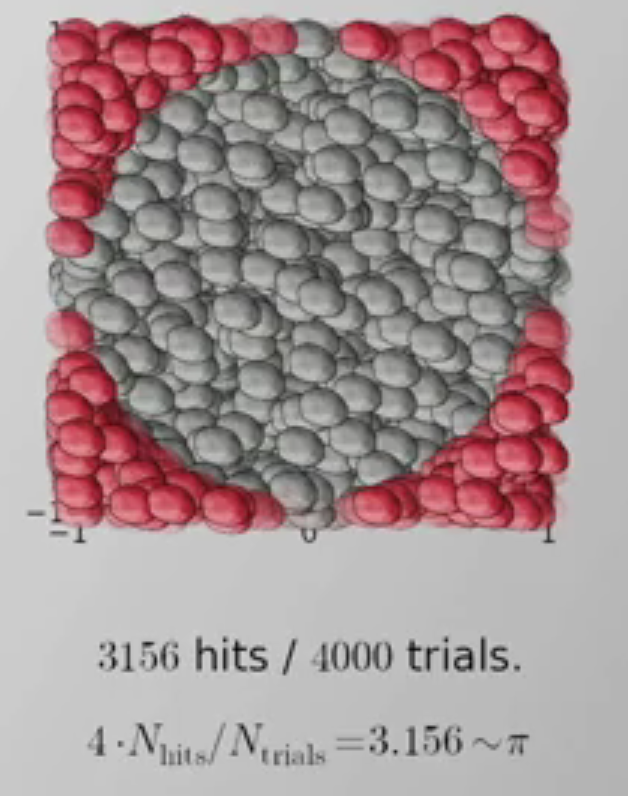

<h1> <a href="https://www.coursera.org/learn/statistical-mechanics/lecture/rWoI7/lecture-1-introduction-to-monte-carlo-algorithms" target="_blank">
  Direct Sampling ： Children on the beach</a> </h1>
<p>
</p>
<strong class="attention" style="font-size:1.5em;">
  数据越多，越能“以点代面”： </strong>


